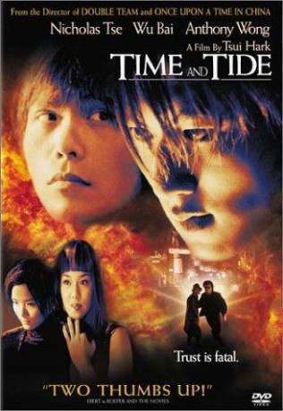

#6870 Tyler und Jack - Time and Tide
Alternativ: Time and Tide (Englischer Titel)
 
 IMDB-Wertung: 6.9 / 10
IMDB-Wertung: 6.9 / 10  Metascore: 0
Metascore: 0 
Tyler is a restless, streetwise 21-year-old Hong Kong native who's had trouble gaining the trust of others all his life. He secretly fantasizes about living the good life in South America. After a while, he is forced to deal with the reality of impending fatherhood. Hankering for quick cash, however, he joins a bodyguard company. Later, he makes friends with a once disillusioned mercenary determined to begin life in a new way. However, their companionship is brief: they both are uncontrollably forced toward opposite sides of a deadly showdown...
Jahr: 2000
Dauer: 106 Minuten
FSK: 18
Land: Hong-Kong Studio: Columbia TriStar Home EntertainmentTonspuren:
Untertitel:
Auflösung: 1080p (1920x816) Größe: 9328 MB
Genre: Action, Thriller, Drama, Krimi
Regisseur:  Hark Tsui
Hark Tsui
Drehbuch: Koan Hui
Soundtrack:
Darsteller:
 Nicholas Tse als Tyler
Nicholas Tse als Tyler- Wu Bai als Jack
- Candy Lo als Ah Hui
 Anthony Chau-Sang Wong als Uncle Ji
Anthony Chau-Sang Wong als Uncle Ji Jack Kao als Police Officer
Jack Kao als Police Officer- Francis Pardeilhan als Jack
- Cathy Tsui als Ah Jo
- Jun Kung als Miguel
- Arsenio Bhoy Agpoon als
- Albert als
- Tsu Chun Bon als
- Angelo Carmones als
- William Chan als
- Hung On Cheung als
- Charles Fok als
- Kenji als
- Leung Tal Keung als
- Roderik Lam als
- Joe Li als
- Robert Miller als
- Fu Yeuk Pang als
- Wong Kam Pong als
- Wong Ting Pong als
- Antonio Represan als
- Roberto Rojas als
- Kenji Tanigaki als
- Erik Man Wai als
- Li Wan als
- Paggie Wong als
Datei: X:\FSK18-Eastern\Tyler und Jack - Time and Tide (2000, FSK18, 1920x816).mkv seit 05.09.2017
Festplatte: FSK18
 Es gibt insgesamt 102 Filme in der Gruppe 'FSK18-Eastern'
Es gibt insgesamt 102 Filme in der Gruppe 'FSK18-Eastern'